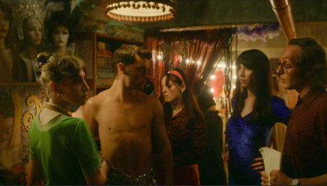
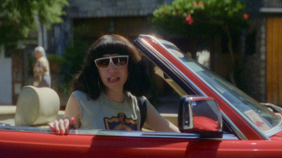
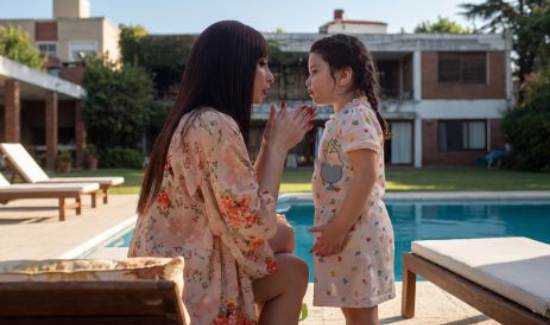
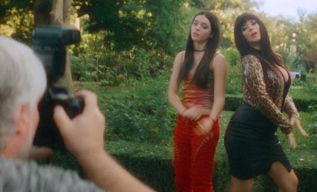
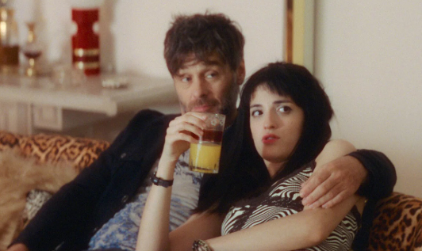
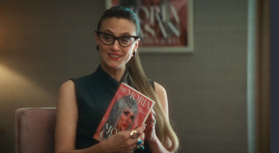
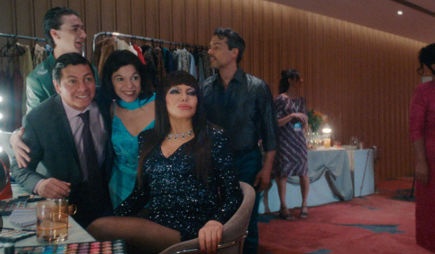
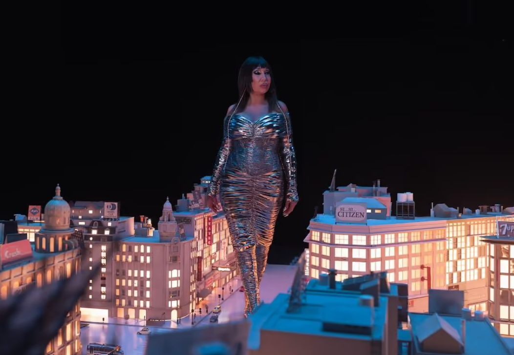

Episodios
Los 8 episodios de Moria
Tocá un capítulo para ver el detalle completo.
-

01El Obelisco con tetas
En los años 60, en Buenos Aires, la ambiciosa Ana María Casanova comienza su transformación pública hasta llegar a ser el fenómeno cultural que todos conocemos como Moria Casán.
-

02Soy de otro sistema solar
Durante los años más oscuros del país, Moria lanza un producto televisivo osado, que desafía el rol tradicional de la mujer y la convierte en una estrella venerada.
-

03Yo trascendí mi cuerpo
Mientras se reinventa con un programa atrevido, Moria ve cómo su hija va madurando hasta convertirse en una rival… y en el reflejo de su propia ambición.
-

04Si querés llorar, llorá
Con un provocador talk show nuevo, Moria se sumerge de lleno en temas picantes y tabús sociales, mientras navega las turbulentas aguas de su relación con Sofía.
-

05Japaleta
«El jamón no era jamón, era japaleta. Todo berreta»: el mal servicio de un restaurante queda expuesto en un móvil televisivo. Mientras tanto, Sofía busca forjar su propio camino.
-

06No hablen de mí
«El decorado se calla». Harta del escrutinio público incesante, Moria cuenta su verdad hablando abiertamente sobre las experiencias que le han dado forma a su vida.
-

07Me impresiona mi fama
Mientras la intensidad y espontaneidad de Moria dejan una marca en su entorno, la desconexión que siente con Sofía se vuelve más difícil de ignorar.
-

08Sabrán de mí todo el tiempo
Luego de un brevísimo paso por la cárcel, Moria se reencuentra con Sofía, reflexiona sobre su legado y celebra la vida que ha construido como pilar de la cultura argentina.